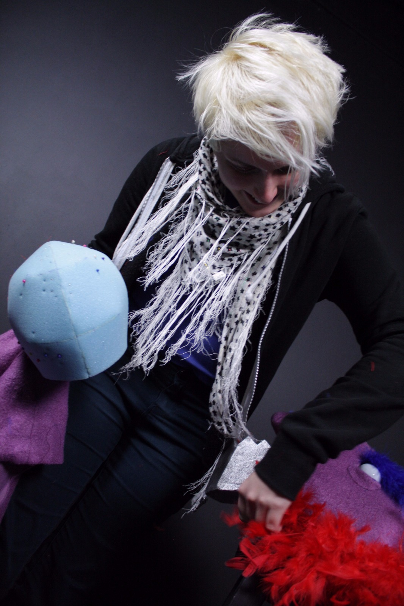

About Lucy Moore
I cannot stop making things!
Hello and welcome to my website!
My name is Lucy and I am prop maker, self taught illustrator and photographer, currently studying at Northbrook college, on a Prop Making and Special Effects foundation course. Ever since I could remember I have been surrounded by artists and theatre, my parents would work for the local Sutton theatre company in London, and every day after school I would stay with them until their work was finished, I spent my time watching them paint backdrops and carve out giant poly sculpt props.
I have also always carried a sketchbook with me everywhere I go, and love to take time to sit down and just draw.
For my A levels I took the subjects Art and Design as well as Photography, I learnt a lot from my tutor who taught me about the use of great compositions, and that copying was the best way to learn, and should not be looked down upon. Following his guidance I grew more confident with my drawing skills.
During my time at university I have learnt many important industry skills, and had a lot of fun along the way! I am currently in my second year, and wish to continue my studies at Northbrook and complete a BA honours course in prop making. I am open to any enquires about my work or any questions you may have for me, feel free to contact me on the contact page!